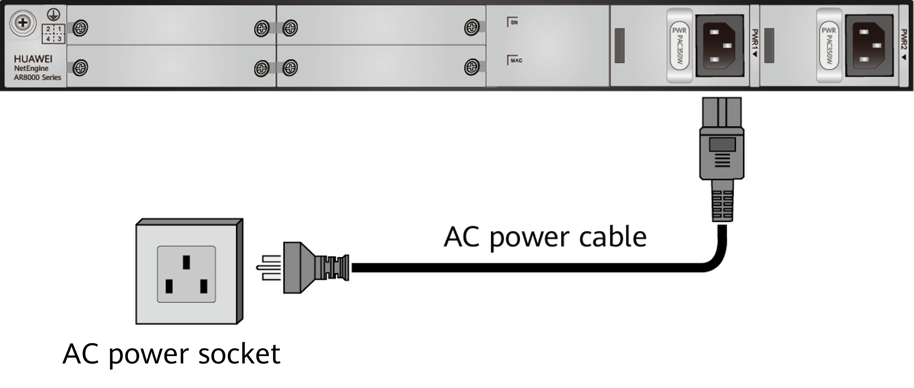

Connecting a Power Cable
Context

To avoid electric shock, do not connect power cables while the power is on.

- Before making any connections, ensure that you take appropriate ESD measures, such as wearing ESD gloves or an ESD wrist strap.
- Do not power on the router before you finish connecting and routing power cables.
- Power cables delivered with the device are for use with this device only.

The power cables used in different countries and regions have different specifications. The cables in the figures are for reference only and may differ from the cables delivered.
Tools and Accessories
- ESD wrist strap
- Power cable
Procedure
- Verify that the router is reliably grounded.
- Verify that the power switch is set to the OFF position.
- Put on an ESD wrist strap. Ensure that the ESD wrist strap is grounded and in close contact with your wrist.
- Connect an AC power cable.
- Connect one end of the AC power cable to the power port on the router's power module.
- Connect the other end of the AC power cable to an AC power socket.

Follow-up Procedure
After connecting the power cable, verify that:
- The power cable is securely connected to the power port on the device.
- If multiple devices are installed, attach labels to both ends of each power cable and write numbers on the labels to identify the cables.